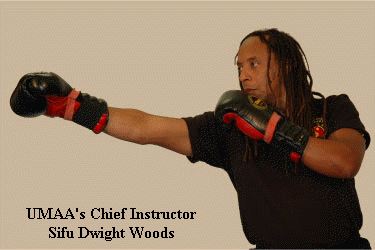

|
Get yourself up-to-speed with the short
history of Unified Martial Art Academy,
the #1 Jeet Kune Do school in Miami while you wait for your confirmation
email.
Remember, you must click the link in that email so that we are not accused
of
spamming you. In less than 5 minutes you'll have all the information you
use.
See you on the inside!

Since 1988 Unified Martial Art Academy has led
the way in providing the highest levels of training and individual development
in the martial arts, specifically catering to those Miami-Dade County residents
who want to use martial art as a vehicle for personal growth.
UMAA's Chief Instructor Sifu Dwight Woods,
is a martial artist who has 35 years of experience, 34½ of which have been
dedicated to the study and practice of Bruce Lee's Jeet Kune Do.
Sifu Dwight is a native of Trinidad,
West Indies who grew up on the neighbouring island of Barbados. In 1983, he was the first Caribbean resident
to attend a California Martial Arts Academy seminar where he met and trained under
Dan Inosanto,
Cass Magda,
Francis Fong,
Paul Vunak,
Larry Hartsell and
Tim Tackett.
If you recognise any of those names then you'll
realise that right from the beginning, Sifu Dwight Woods went straight to the
top and got his instruction from the very best in Jeet Kune Do.
Even if you don't know those names you can
still appreciate that as a member/student at Unified Martial Art, you'll receive
the same top-level instruction that Sifu Dwight received from his teachers.
Today the people behind the Ultimate Fighting
Challenge/Mixed Martial Arts "phenomenon" like to call Bruce Lee the "father of
mixed martial arts".
It's very smart of them to do this because now
they align themselves with the 20th century's best known martial arts icon.
But they are mistaken! Bruce Lee was not
interested in martial sport competition. Instead, he was more interested in
martial art as a vehicle for self-development NOT as a means to "ground and
pound" your opponent into bloody submission.
Also Bruce Lee's martial art philosophy goes
way beyond mere kickboxing and grappling. For example, Bruce Lee always preached
well-roundedness. Well-roundedness means you must develop ability and skill in
several complementary areas:
- empty hands
- weaponry
- long range
- middle range
- close quarters
- stand-up fighting
- ground-fighting
And lastly, it means development in these
crucial areas of human development:
- physical
- emotional
- mental
- intellectual
- psychological
- spiritual
All of this and more awaits you as a member of
Unified Martial Art Academy!
Sifu Dwight Woods'
Development Path
In Bruce Lee's Jeet Kune Do
-
In 1985, he received his Apprentice Instructor certificate from Inosanto and UMAA was started. At first, UMAA
operated out of the garage of Dwight's home in Barbados.
-
That "backyard JKD mentality" continued
in 1986 when
he relocated to Miami, Florida as UMAA moved through a succession of parks, basketball courts, living rooms and
garages.
-
In April 1988, the first step was taken to provide instruction to a wider clientele with the opening of
the first "bricks & mortar" Academy in the warehouse district of Tamiami
Airport. This semi-private/semi-public tradition continued for 4 years as the
word about JKD was spread through the South Florida area.
-
In
December 1992, UMAA moved to its first "commercial" location on busy Kendall
Drive in southwest Miami-Dade county.
-
In
March 1996, in its second Kendall Drive incarnation, UMAA provides students
from ages 4 and up with 2400 square feet of state-of-the-art facilities,
including heavy bag and wooden dummy stations, a pro shop (under construction)
and separate men's and women's shower and bathroom facilities.
-
There
are also UMAA affiliate branches in Barbados and Trinidad, where Sifu Dwight
conducts annual seminars.
-
In
October 1996, Dwight Woods was awarded the rank of Full Instructor in Jun Fan Gung Fu/Jeet Kune Do and Filipino Martial
arts by Dan Inosanto. His other instructorship rankings are in Muay Thai under Surachai Sirisute
as well as teaching diplomas in Boxe FranÁaise-Savate
under Salem Assli and Wing Chun Gung Fu under Francis Fong.
-
Dwight has also trained with and been trained by Rick Faye,
Chris Kent, (the late) Ted Lucaylucay, Jean-Jacques Machado, Yorinaga Nakamura, Erik Paulson,
Burton Richardson, (the late) Edgar Sulite and other luminaries in the martial art world.
-
Since its first seminar
in April 1989 with Pendekar Paul de Thouars and Burton Richardson, UMAA has afforded martial
artists the opportunity to train with the world's best.
-
In October 1989 Dan Inosanto conducted his first Miami
seminar and continued to do so for 17 straight years until June 2006.
-
UMAA has also hosted (or co-hosted) seminars
with Salem Assli, Willem de Thouars, Francis Fong, Samuel Kwok, Jean-Jacques Machado, Cass Magda, Erik Paulson,
Surachai Sirisute, (the late) Herman Suwanda, Tim Tackett and Paul Vunak.
- On a historical note, it should be noted that Dan Inosanto's first Florida seminar was hosted in Sarasota in August
1988 by LaVonne Martin. UMAA members and staff supported this effort just as they did when Richard Bustillo and the
IMB Academy came to Miami, also in 1988. UMAA members and staff have also attended Miami or Florida seminars with
Dioniso Cañete, Dong Cuesta, (the late) Larry Hartsell, Wally Jay, Daniel Lee, (the late) Remy Presas, (the late) Edgar Sulite and Ted Wong.
|